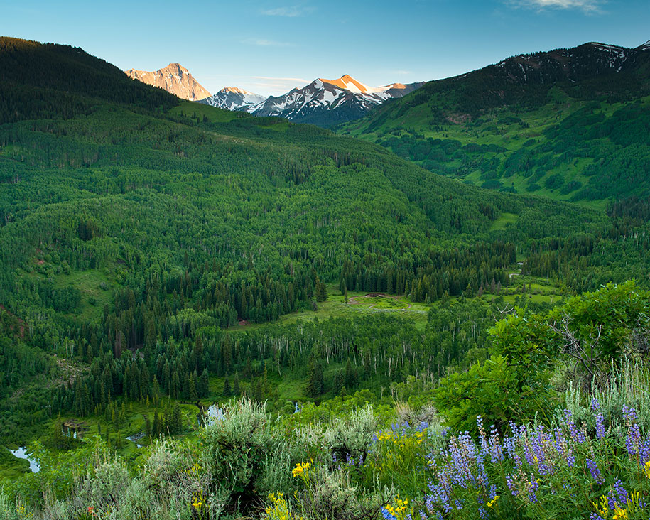

Hello! My name is Kay'ah and I am 19 years old. My end (long term) goal is to be a project manager in the technology industry, but as far as short tem goes I'm looking forward to seeing where my Per Scholas journey takes me. Outside of tech, one of my favorite things to do is travel. I also love to go hiking, listen to music and hang out with my friends.
As I said before, one of my all time loves is travelling. One of my favorite places that I've been to is Cusco, Peru. Not only was I able to sightsee and envelop myself in many cultural experiences, but I also was able to give back to the community. While there, my group and I had the opportunity to volunteer at a K-8 school within a local village. Overall, it's definitely one of my most memorable trips.
Though travelling overseas is always fun, sometimes it's even better to just relax in a car and take in the scenery (especially when you aren't the driver :). I really wanted to add some of my all-time favorite states, but I had a iintrusive thought. How can you narrow down your top three states of all time??? But just as soon as I had that thought,the answer hit me like a ton of bricks. The way to capture the devotion and attention of others is through their stomachs of course! So here is my all-time favorite places food-wise. Every single type of cuisisne known to man is within these states, from big chain dining to small locally owned businesses (my personal fav). I'm getting hungry just at thought of some of those mouth-watering dishes...